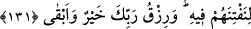
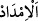
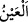

131. Sakın, kendilerini denemek için onlardan bir kesimi faydalandırdığımız
dünya hayatının çekiciliğine gözlerini dikme! Rabbinin nimeti hem daha hayırlı,
hem de daha süreklidir.
“Sakın, kendilerini denemek için” yani biz onlara nimetleri artıralım, onlar da inkâr,
nankörlük ve azgınlıklarını artırsınlar da azâbı kendilerine vâcib kılsınlar diye onlara
verdiklerimizle, kendilerini denediğimiz kimselere yaptığımız muâmeleyi yapmak için,
demektir. Çünkü imtihan edilip denendiği zaman kişiye ya ikrâm edilir, ya horlanır.
“Onlardan bir kesimi” putperestler, yahudi ve hristiyanlardan kitab ehli gibi bir
kısım kâfirleri “faydalandırdığımız” dünyanın süslerinden faydalandırdığımız…
Kendisinden faydalanıldığı için ev eşyasına ‘
’ denir. “__WORD__ un aslı, uzama ve
yükselme demektir. “
” da uzun süre faydalanma anlamındadır.
Tefsîr-i Kebîr’de “__WORD__ (faydalandırdığımız)” ifâdesi hakkında der ki: “Yani
lezzetli kıldığımız. “
’” görülen güzel manzaralardan, işitilen hoş seslerden,
koklanan hoş kokulardan, diğer giyilen ve nikâhlananlardan lezzet aldırmak/tattırmak
demektir.”
“Dünya hayatının çekiciliğine” yâni verdiğimiz dünyanın ziynetine, hoşluğuna,
parlaklığına ve güzelliğine “gözlerini dikme!” Yani rağbet ve meyil yoluyla bakışını
yöneltme.
“__WORD__in asıl mânâsı çekmek/uzatmaktır. “__WORD__ çoğunlukla sevilen şeyler için
kullanılmıştır. Nitekim “
Onlara canlarının istediği meyve ve
etten bol bol verdik” (et-Tûr, 52/22) buyrulmuştur. “el-Medd” ise çoğunlukla
istenmeyen şeyler için kullanılmıştır. Nitekim “
azabını uzattıkça
uzatacağız (nemüddü lehû mine’l-azâbi medden)” (Meryem, 19/79) buyrulmuştur.
Uzuv olan göz (__WORD__), görme duyusundan (__WORD__) farklıdır. Onun için Allah Teâlâ kudsî
hadiste “Onun kulağı ve gözü (__WORD__)” değil, “Onun işitmesi ve görmesi olurum (
)”[126] buyurmuştur.
Bazıları şöyle demiştir: “Gözü dikmek” bakışı uzatmak; bakılan şeyi güzel bularak,
beğenerek ve benzerinin kendisinin de olmasını temennî ederek neredeyse gözünü ondan
ayırmamak demektir.”
Burada uzatılmadan (harama) gözün ilişmesinin affedileceğine işâret vardır. Çünkü
ondan sakınmak mümkün değildir. Nitekim bakılan şey (Allâh’ın tabiatteki
hârikalarından) bir doğal güzellik ise, kişinin gözünü bundan ayırıp bakışını başka yöne
çevirmesi çoğu kere güç olabilir. İnsanın sevdiği bir şeye bakarken gözünü ondan
ayırması zordur. İşte bu sebeple Nebî (a.s.)’a: “Asla gözlerini dikme!” buyrulmuştur.
Yani insan yaratılışında olan bu şeyi yapma, demektir.